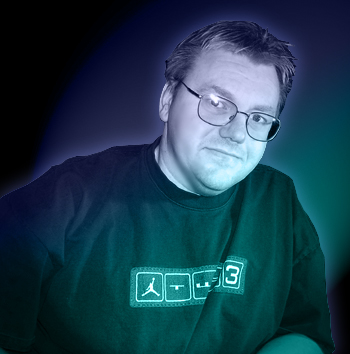

|  | Kenny Young, webmaster of "UFO RESEARCH: CINCINNATI!" is a multi-award winning television producer, director and writer and formerly a State Section Director for M.U.F.O.N. and also a former public relations director of Tri-State Advocates for Scientific Knowledge. He is now an independent researcher and has lectured to large audiences about the UFO mystery and served as a host, panelist and debator on several TV programs including "UFO Update: LIVE!" and the award winning documentary "UFO REPORT." In addition to evaluating UFO and related claims, conducting field investigations and interviewing eyewitnesses and public officials, Young has worked succesfully to obtain secret UFO video recordings held by the Department of Energy and has also obtained numerous 9-1-1 audio tapes of police UFO incidents. In addition, he employs the Freedom of Information Act (FOIA) to petition the U.S. government for release of UFO-related documents. His articles have appeared in the "M.U.F.O.N. Journal," "UFO Magazine," "FATE Magazine" and "Equinox Magazine." He was the host and organizer of the 39th Annual 2003 National UFO Conference. Young's UFO investigations have also been featured nationally on the 2-hour NBC Television program "CONFIRMATION" as well as "SIGHTINGS" and "UFOs: The Field Guide" on The Sci-Fi Channel. He has appeared on numerous radio programs including "Strange Days Indeed with Errol Bruce Knapp," "The Jeff Rense Show," "Coast to Coast A.M. with Art Bell," "Late Night with George Noory," "The Sci-Zone with Bill Boshears," "The X-Zone with Rob McConnell," "The Jim Hickman Report" and many others. Kenny Young lives in Florence, Kentucky and is also a musician, artist and employed as Infochannel Coordinator for a cable television operation in the Greater Cincinnati area. He is also a freelance videographer and editor, specializing in graphic design. Young remains skeptical and objective concerning UFOs, but feels that a sober evaluation of the data suggests the phenomena warrants further scrutiny. |